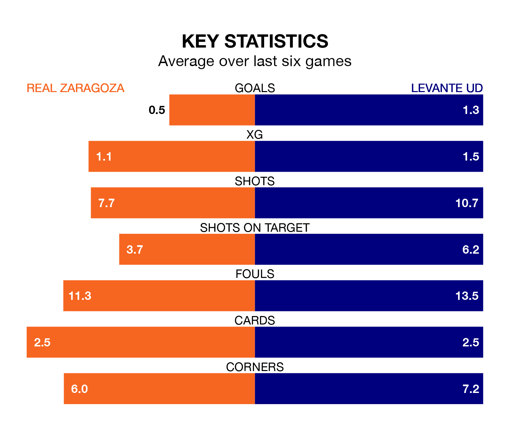

Real Zaragoza host Levante UD on Wednesday at Estadio de la Romareda in the Segunda División.
In their last league match, on Sunday, Zaragoza drew with SD Amorebieta 1-1 away, with their goal scored by Maikel Mesa Piñero.
Levante won, 2-1 at home against SD Huesca, with Carlos Álvarez and Ángel Algobia on the scoresheet.
With 19 goals in 20 games so far this season, Zaragoza are scoring at below the league average rate with 0.9 goals per game. But they are conceding fewer than average too, letting in 19 goals at a rate of 0.9 per game.
Levante, meanwhile, are average scorers, with 1.2 goals per game. They have also conceded 1.2 goals per game.
Real Zaragoza are in disappointing form in the Segunda División, with one win and two draws from their last six games.
With two wins and a draw over that period, Levante UD's form is slightly better – they have taken seven points from 18, compared to the hosts' five.
The away side's Sergio Lozano Lluch is among the league's most creative players, racking up six assists in 16 appearances so far this season, and holding second spot in the Segunda División's assist charts.
For Zaragoza, Francisco Gámez López and Manu Vallejo have set up the most goals, having laid on two assists apiece to date.
Levante are seventh in the table after 20 games, of which they have won eight and drawn seven, earning 31 points.
Zaragoza are seven places behind Levante in 14th, with seven wins and six draws putting them on 27 points.
Over the last two years, Zaragoza and Levante have played each other twice. they drew both of them.
Their last meeting was on March 31, when they played out a 1-1 draw.
Wednesday's match will be refereed by Álvaro Moreno Aragón, who has taken charge of 10 Segunda División games so far this season, issuing two red cards and booking 41 players. He has awarded seven penalties.
The last Zaragoza game Moreno Aragón refereed was a 0-0 home draw with Real Oviedo on November 6. He is yet to oversee a match featuring Levante this season.
